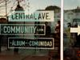
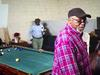
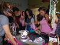
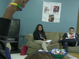
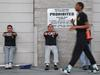
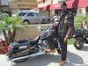

Arts And Culture
-
Museum's North Campus to function as public park, educational space
4/22/12, 9:51 p.m.
The Natural History Museum is making some big changes – and it's starting with taking its exhibits outside.
-
Community photo project draws hundreds to Central Avenue
4/19/12, 4:54 p.m.
"Central Avenue: A Community Project," attracted more than 400 people to its opening reception in South LA.
-
Central Avenue photo exhibit kicks off
4/15/12, 11:45 p.m.
The "Central Avenue: A Community Album" exhibition will run daily through Saturday, April 21st, from 10 a.m. to 6 p.m. at 2515 Central Avenue (at Adams Boulevard).
-
Royalty for a night: South LA non-profit to donate prom essentials to local youth
4/15/12, 6:20 p.m.
South L.A. non-profits are partnering up to make local students' prom night a memorable one.
-
Picture this: Weeklong photo exhibition to shine spotlight on Central Avenue
4/13/12, 3:47 p.m.
"Central Avenue: A Community Album" will show one of the southside's main thoroughfares as it's never been seen before – by most people, anyway.
-
South LA Snapshot: Teenage author
4/10/12, 5:26 p.m.
In OnCentral's "South L.A. Snapshot" series, OnCentral provides you with a glimpse into the lives of everyday women and men in South Los Angeles. This time, we talked to a teenage author.
-
LAPD in South LA wants to rock and roll all nite
4/10/12, 9:06 a.m.
LAPD Officer Bob Deamer of South L.A.'s Newton Division talked excitedly over the blare of guitars in Harmony Elementary School's auditorium.
-
Under the radar: Bienestar offers a home to the LGBT community
4/5/12, 1:32 p.m.
LGBT resource center Bienestar is the only one of its kind in South Los Angeles.
-
Off the streets and into uniform: The Newton Cadets
3/29/12, 11:06 p.m.
The Cadet program run by the LAPD's Newton Division gives kids something to do in an area where constructive activities can be hard to come by.
-
South LA Snapshot: Bike club member
3/28/12, 4:28 p.m.
In OnCentral's "South L.A. Snapshot" series, OnCentral provides you with a glimpse into the lives of everyday women and men in South Los Angeles. This time, we talked to a member of a motorcycle club.
About Us
OnCentral is a site for the neighborhoods around Central Avenue. It's a news site where we not only provide information, but put the power of storytelling in your hands. Sign up and you can share your story or help an existing story grow by adding in your perspective or corrections.
Follow OnCentral


- Most Viewed
- Most Commented